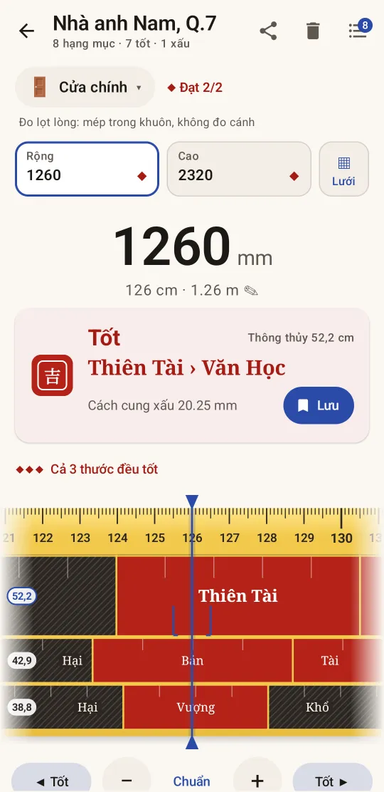
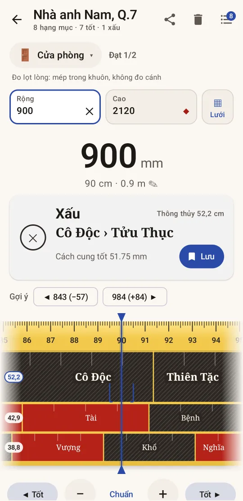
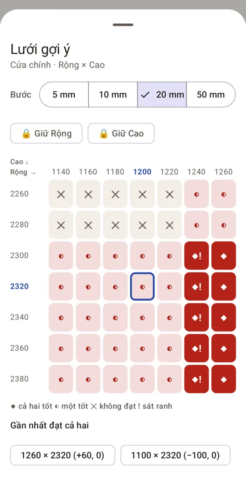
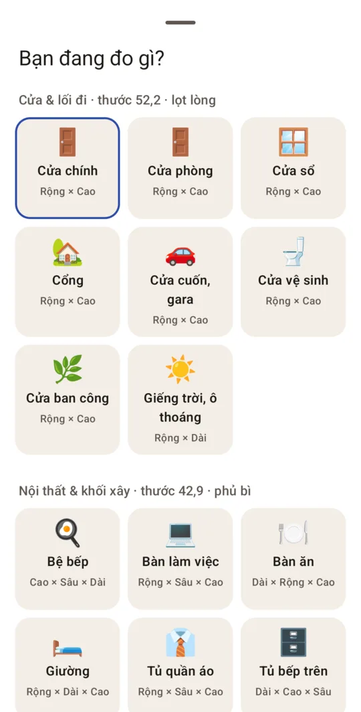
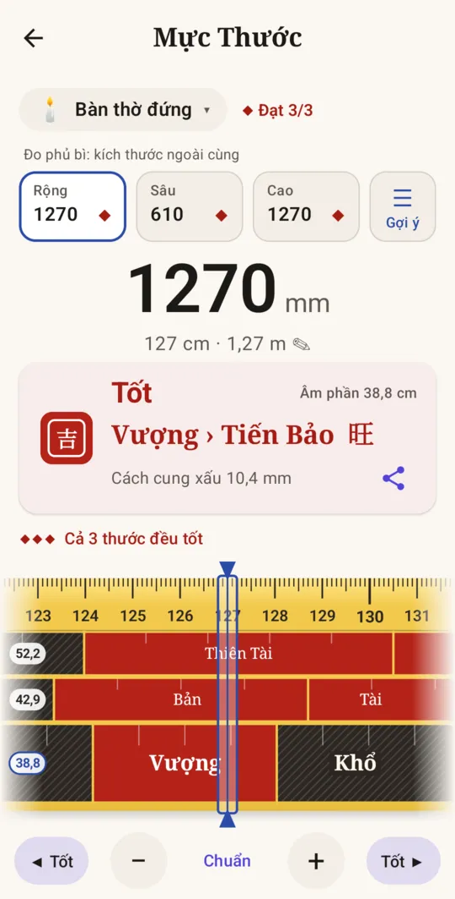
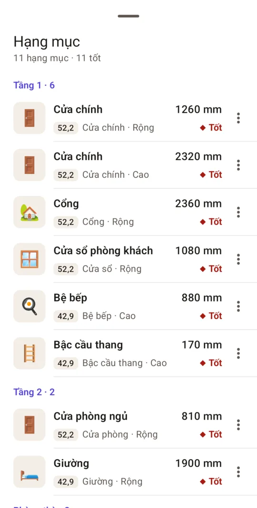

Mực Thước – Thước Lỗ Ban
Android · iPhone · Miễn phí · Không cần tài khoản
Thước Lỗ Ban cho người cầm thước: chọn hạng mục, nhập kích thước, biết ngay tốt hay xấu, còn cách ranh cung bao nhiêu mm và kích thước đẹp gần nhất là bao nhiêu.






Tính năng
Một công cụ đo đạc cho nhà ở, làm rõ từng con số thay vì chỉ tô màu đỏ đen.
Đúng thước cho từng hạng mục
Cửa và lối đi đo lọt lòng trên thước thông thủy 52,2 cm. Nội thất và khối xây đo phủ bì trên thước 42,9 cm. Bàn thờ và âm phần trên thước 38,8 cm. Bạn chọn hạng mục, app chọn thước.
Kết luận kèm khoảng cách
Tốt, Tốt · sát ranh hoặc Xấu, kèm tên cung lớn, cung nhỏ và số mm còn cách ranh cung. Mỗi kết luận có chữ và biểu tượng, không chỉ dựa vào màu.
Gợi ý kích thước đẹp gần nhất
Gặp kích thước xấu, app đưa ra kích thước tốt gần nhất ở phía dưới và phía trên. Nút “Tốt ▶” nhảy tới kích thước tốt kế tiếp, làm tròn theo bước bạn chọn.
Lưới Rộng × Cao
Cửa cần cả chiều rộng và chiều cao cùng đẹp. Lưới gợi ý cho thấy mọi cặp kích thước quanh số đo bạn nhập, bước từ 5 đến 50 mm, và cặp đạt cả hai gần nhất.
Dự án cho cả ngôi nhà
Lưu từng hạng mục theo khu vực như Tầng 1 hay Phòng thờ, thêm ảnh nếu cần, rồi chia sẻ danh sách cho thợ qua Zalo, Messenger hay ứng dụng bất kỳ.
Chọn thước theo nguồn bạn tin
Tài liệu ghi khác nhau: 52,2 hay 52 cm, 38,8 hay 39 cm. Chọn trong Cài đặt và kết quả đã lưu được tính lại. Dung sai “sát ranh” và bước làm tròn cũng chỉnh được.
Không tài khoản, dữ liệu trên máy
Dự án và ảnh chỉ lưu trên điện thoại của bạn. Thước dùng được cả khi không có mạng, đo tới 50 m.
Ba thước Lỗ Ban dùng ở Việt Nam
Mỗi thước chia thành các cung tốt (đỏ) và xấu (đen), lặp lại theo chu kỳ. Hạng mục quyết định dùng thước nào và đo thế nào.
| Thước | Chu kỳ | Dùng cho | Cách đo | Cung tốt (đỏ) | Cung xấu (đen) |
|---|---|---|---|---|---|
| Thông thủy 52,2 cm | 522 mm, 8 cung | Cửa đi, cửa sổ, cổng, cửa cuốn, giếng trời, ô thoáng | Lọt lòng | Quý Nhân, Thiên Tài, Nhân Lộc, Tể Tướng | Hiểm Họa, Thiên Tai, Cô Độc, Thiên Tặc |
| Dương trạch 42,9 cm | 429 mm, 8 cung | Bệ bếp, giường, tủ, bàn, bậc cầu thang, khối xây | Phủ bì | Tài, Nghĩa, Quan, Bản | Bệnh, Ly, Kiếp, Hại |
| Âm phần 38,8 cm | 388 mm, 10 cung | Bàn thờ, tủ thờ, bàn thờ Thần Tài, mộ phần | Phủ bì | Đinh, Vượng, Nghĩa, Quan, Hưng, Tài | Hại, Khổ, Tử, Thất |
Cách tính: lấy kích thước trừ đi số chu kỳ trọn vẹn rồi xem phần dư rơi vào cung nào. Ví dụ cửa chính rộng 1260 mm trên thước 52,2: 1260 − 2 × 522 = 216 mm, nằm trong cung Thiên Tài (195,75–261 mm), nên là kích thước tốt. Ranh cung xấu gần nhất là 195,75 mm, cách 20,25 mm.
Lọt lòng là khoảng trống bên trong khuôn, không tính cánh và khuôn. Phủ bì là kích thước ngoài cùng của vật.
Hỏi đáp
Thước Lỗ Ban là gì?
Thước Lỗ Ban là thước dân gian dùng khi chọn kích thước nhà cửa, đồ đạc và đồ thờ. Mỗi thước chia thành các cung tốt (đỏ) và xấu (đen), lặp lại theo chu kỳ. Ở Việt Nam thường dùng ba thước: thông thủy 52,2 cm, dương trạch 42,9 cm và âm phần 38,8 cm.
Đo cửa dùng thước nào?
Thước thông thủy 52,2 cm, đo lọt lòng: khoảng trống bên trong khuôn cửa, không tính cánh. Nên kiểm tra cả chiều rộng và chiều cao. Mực Thước báo “Đạt 2/2” khi cả hai cùng tốt, và lưới Rộng × Cao giúp tìm cặp kích thước đạt cả hai.
Bàn thờ dùng thước nào?
Thước âm phần 38,8 cm (thước Đinh Lan), đo phủ bì: kích thước ngoài cùng của bàn thờ. Nên kiểm tra cả rộng, sâu và cao.
Vì sao các trang và ứng dụng cho kết quả khác nhau?
Vì các nguồn không thống nhất: thước thông thủy được ghi 52,2 hoặc 52 cm, thước âm phần 38,8 hoặc 39 cm, và có nơi dùng thước 38,8 cho cả đồ nội thất. Nhiều kích thước phổ biến lại nằm sát ranh cung, nên chỉ lệch vài mm là đổi kết luận. Mực Thước ghi rõ thước đã dùng cho mỗi kết quả, cho chọn biến thể trong Cài đặt và báo “sát ranh” khi kích thước cách ranh ít hơn mức dung sai.
Mực Thước có mất phí không?
Tải và dùng thước miễn phí, kèm 1 dự án. Mua một lần trên Google Play hoặc App Store để tạo dự án không giới hạn và tắt quảng cáo, hoặc chỉ mua gói tắt quảng cáo. Bản miễn phí có một banner nhỏ ở danh sách dự án, không bao giờ che thước hay kết luận.
Có cần mạng hay tài khoản không?
Không cần tài khoản. Thước và dự án dùng được khi không có mạng. Mạng chỉ dùng để tải quảng cáo và mua hàng qua Google Play hoặc App Store.
Kết quả có thay cho quy chuẩn xây dựng không?
Không. Thước Lỗ Ban là phong tục để tham khảo. Kích thước cửa, cầu thang hay lan can vẫn phải theo quy chuẩn xây dựng và tư vấn kỹ thuật.
Góp ý và hỗ trợ
Thấy kết quả chưa khớp với thước cuộn của bạn, hay muốn thêm hạng mục? Hãy viết cho chúng tôi.